RU keeps failing to stop campus violence
Rajshahi University authorities have repeatedly failed to protect students and journalists from violence on campus since August 2024, even with proctorial officials or teachers present.
Leadership, admissions, campus politics and public-university governance.
Rajshahi University authorities have repeatedly failed to protect students and journalists from violence on campus since August 2024, even with proctorial officials or teachers present.
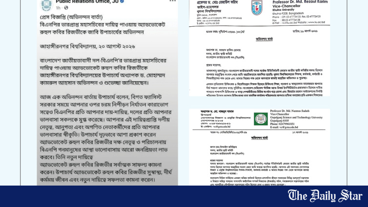
The vice chancellors of at least three public universities have recently used their institutions’ official platforms to congratulate BNP leaders on appointments to party posts amid ongoing controversies over politically influenced appointments to top university positions.
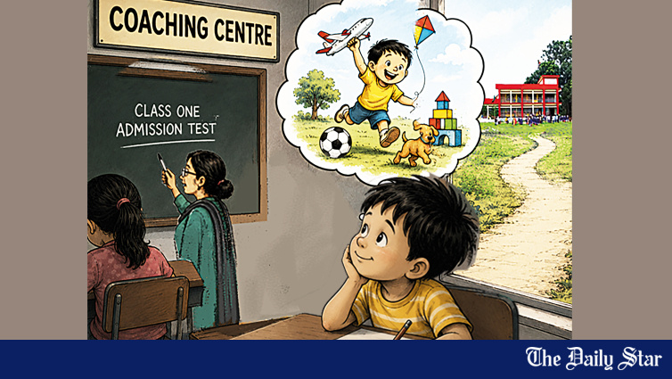
The government’s move to reintroduce written admission tests for class-1 from the next academic year has sparked concern among parents, with many turning to coaching centres and private tutors to help their children prepare for the exams.
The University Grants Commission (UGC) is preparing a research repository to track how university research funds were spent and what they produced over the past 15 years.
Is involvement in politics a crime? Education Minister ANM Ehsanul Hoque Milon posed that question while defending the government’s decision to appoint vice-chancellors to seven universities and a new chairman of the University Grants Commission on Monday.
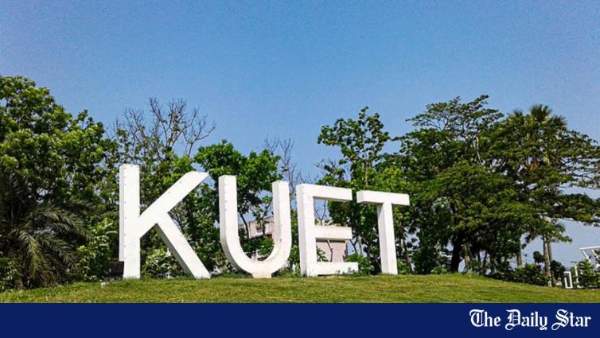
Former vice-chancellor Prof Mohammad Masud misused funds from a German-backed research project, made irregular appointments and withdrew salary after his removal from office at Khulna University of Engineering and Technology (Kuet), according to a government-formed investigation report.
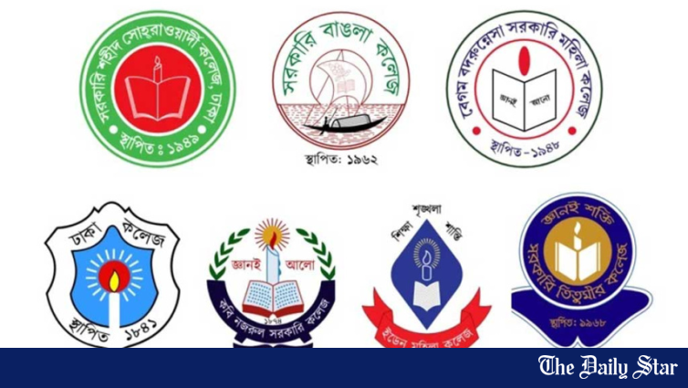
The government has finalised the draft ordinance to establish Dhaka Central University, which will primarily function as an affiliating and regulatory body for seven affiliated colleges.
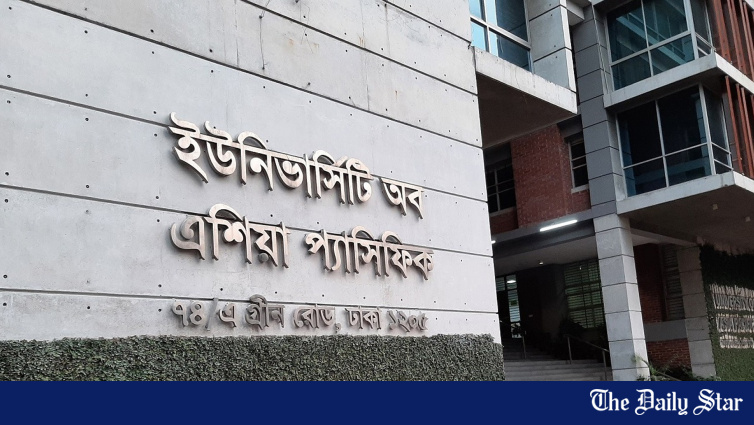
The University of Asia Pacific (UAP), which announced an indefinite closure on Monday, remained shut yesterday amid ongoing student protests over a controversial Facebook post, the subsequent termination of two faculty members, and demands for the vice-chancellor’s removal.

The Islami Chhatra Shibir-backed Sommilito Shikkharthi Jote has swept the Rajshahi University Central Students’ Union (Rucsu) election, securing 20 out of 23 central posts in the first such polls held in 35 years.
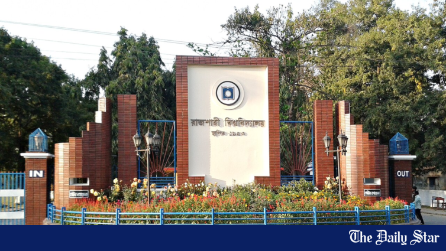
Teachers, staff still holding up the polls, and Rucsu still in their grip
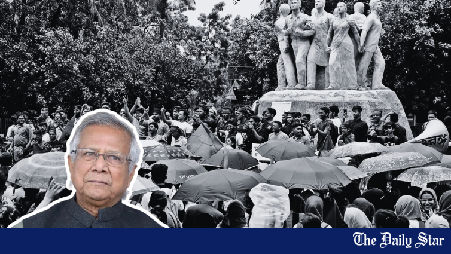
One year into its tenure, the interim government is struggling to bring stability to the country’s educational institutions, beset by campus unrest and disruptions to academic activities.
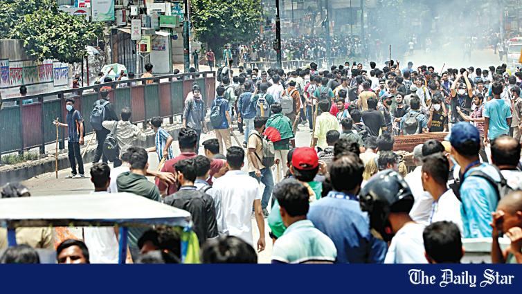
Bangladesh’s student movements have long been rooted in the dormitories of public universities -- Dhaka University, Rajshahi University, Jahangirnagar University, and Chittagong University -- where slogans, marches, and political pressure have often driven change.
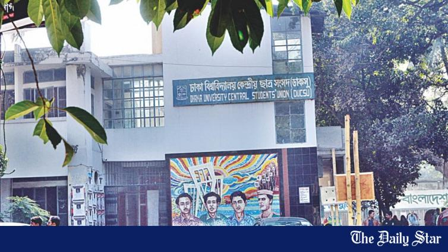
The much-anticipated Dhaka University Central Students’ Union (DUCSU) election is likely to be held in the second week of September.
A journalism teacher at Begum Rokeya University, Mahmudul Haque now sits in jail
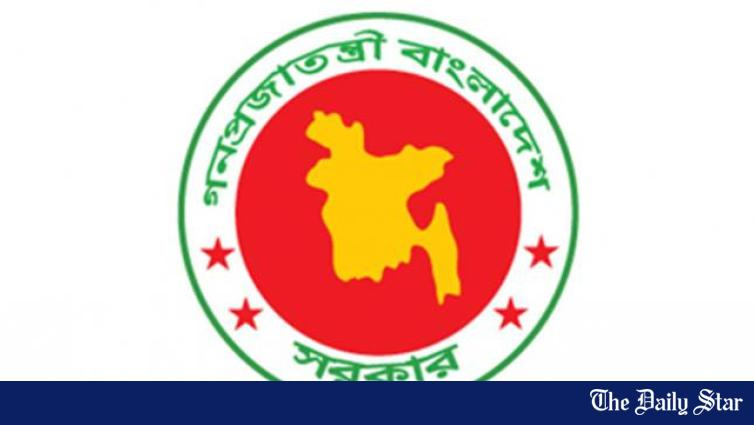
The government has decided to form a search committee to recommend vice-chancellors, pro-VCs, and treasurers for public universities. But educationists are criticising the timing and intent of the move as most of these top positions in at least 47 universities have already been filled.
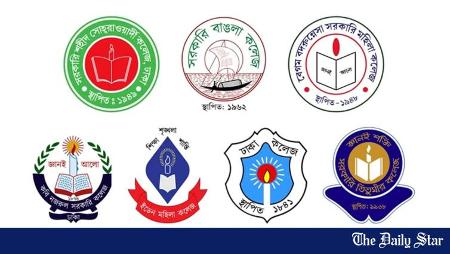
The University Grants Commission is considering a new public university named “July 36 University” for the seven government colleges that were under Dhaka University.
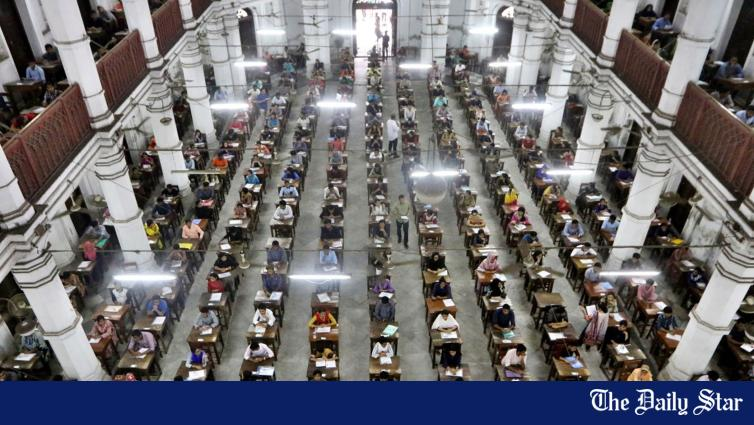
The fate of cluster system admission test for next academic year still hangs in balance, as the education ministry did not make a decision yesterday in this regard following its meeting with university vice chancellors.
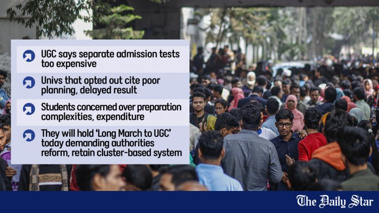
Admission seekers are set to face increased hassle with at least 10 public universities no longer participating in the cluster-based admission test system. They are holding entrance exams on their own.
A new chairman was appointed at the University Grant Commission yesterday, while five public universities also got new vice chancellors.
Public universities are set to reopen today amid a vacuum in the administrations after the resignation of at least 20 vice-chancellors, 10 pro-vice-chancellors, and many other officials.
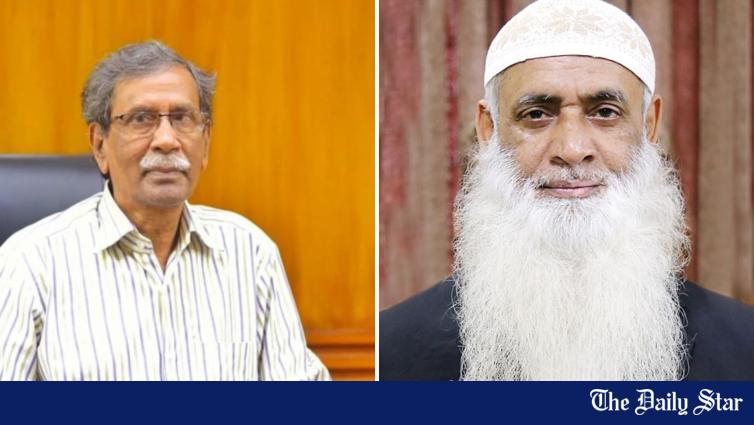
Vice-Chancellors of at least three public universities, including Jahangirnagar University, resigned from their posts
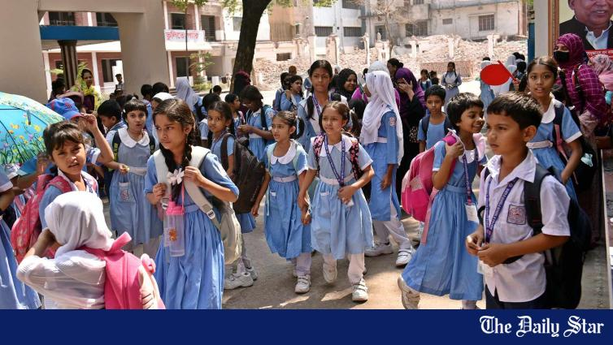
The month-long disruption to university education and two-week long closure of schools have led to the cancellation of public and school exams, upsetting academic calendars and hampering the education of crores of students.
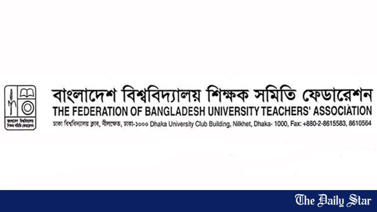
Public university teachers will continue their work stoppage today as their meeting with the government representatives yesterday failed to yield any decision regarding the pension facilities.
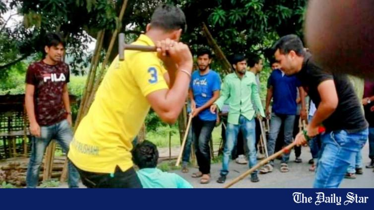
Students from Comilla University were attacked by police during a quota reform demonstration yesterday. At least 10 students, including two journalists, were injured
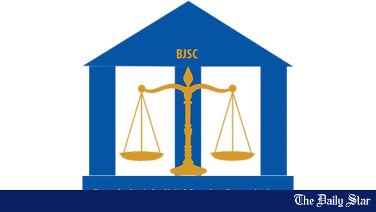
Rashed Ahmed, a former student of Rajshahi University, was provisionally recommended to become an assistant judge following the final results of the 16th Bangladesh Judicial Service (BJS) exams.

The University Grants Commission recently banned any recruitment at Chittagong Medical University (CMU) after finding out about violation of recruitment policies by the university’s administration while appointing six staffers.
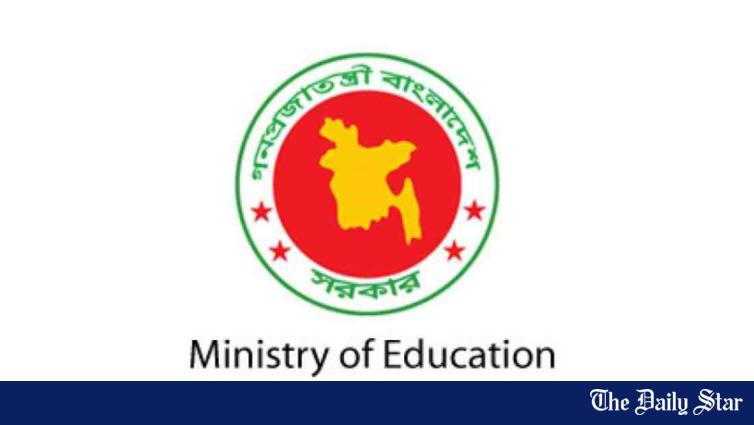
The government yesterday instructed all secondary educational institutions to deposit the admission fees collected from students with the state coffer.
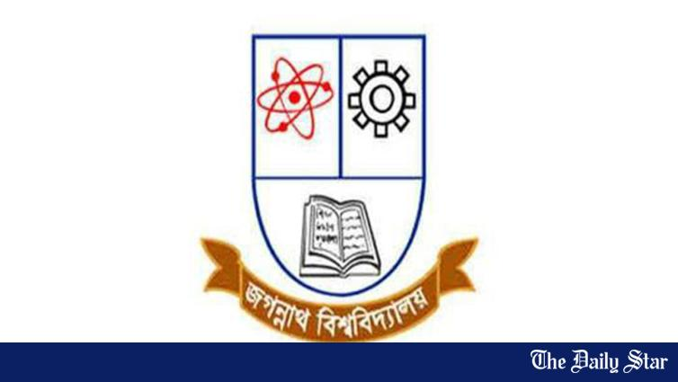
For two years the Department of Film and Television of Jagannath University protected a teacher accused of sexual harassment and went after the complainant.
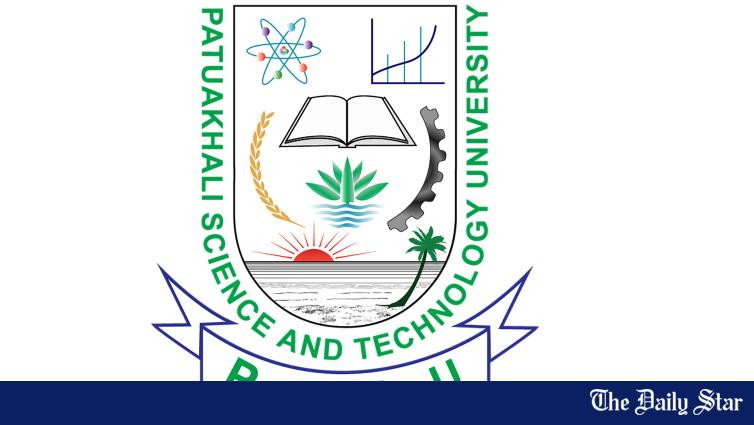
A teacher at Patuakhali Science and Technology University (PSTU) has remained suspended for around 10 months for the “crime” of speaking out against the university authorities regarding irregularities in teachers’ appointments.
Jagannath University (JnU) is in hot water after a University Grants Commission (UGC) report uncovered a number of financial irregularities.During a review of JnU's revised budget for the ongoing 2023-2024 fiscal year and the main budget for 2024-25, the University Grants Commission identified 25 areas of such irregularities
Despite repeated incidents of sexual harassment on Jahangirnagar University campus, the authorities are yet to take any effective steps to make the campus women-friendly, finds a UGC probe body.
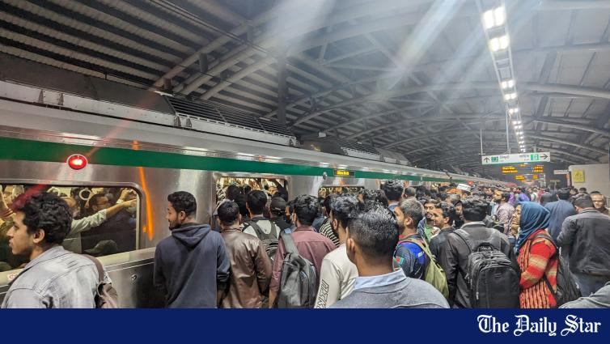
At the Dhaka University station, hundreds of passengers were seen waiting at packed platforms, hoping to board already overflowing trains
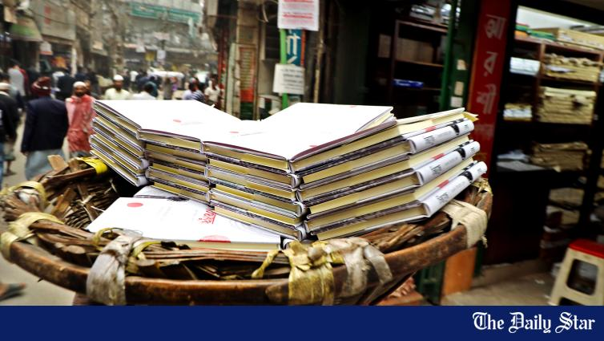
Walking past the Jagannath University and Dhaka Collegiate School, amid heavy noise of construction work at Dhaka Sadar Post Office, these correspondents heard a voice that cut through the cacophony in narrow lanes of Old Dhaka.
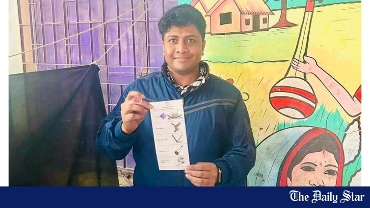
The Bangladesh Chhatra League president of Dhaka University unit today posted a photo of himself holding a ballot paper displaying his vote on his social media account
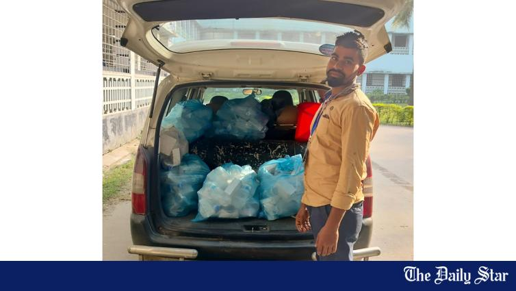
A vehicle carrying supporters of ruling Awami League candidate Bahuddin Nasim stopped in front of the polling centre at the Dhaka University Annex Building around 8:40am
University Grants Commission Member Professor Sazzad Hossain yesterday urged university teachers to work towards bringing “at least 80 percent voters” to polling stations for the 12th national election.
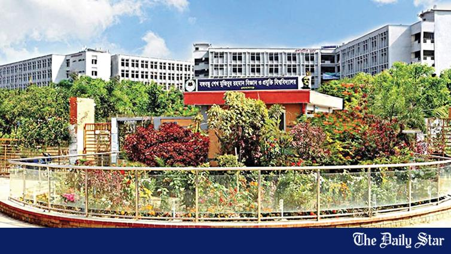
Academic activities at Bangabandhu Sheikh Mujibur Rahman Science and Technology University in Gopalganj are being severely hampered due to a shortage of basic infrastructure and teachers.

Twenty-two public universities, who held cluster admission tests for the 2021-22 academic year, could not start classes on time due to lengthy migration of freshers.
The authorities of Mawlana Bhasani Science and Technology University (MBSTU) in Tangail appointed four teachers against two vacant positions, ignoring the recruitment circular and recommendations of academic planning committees.
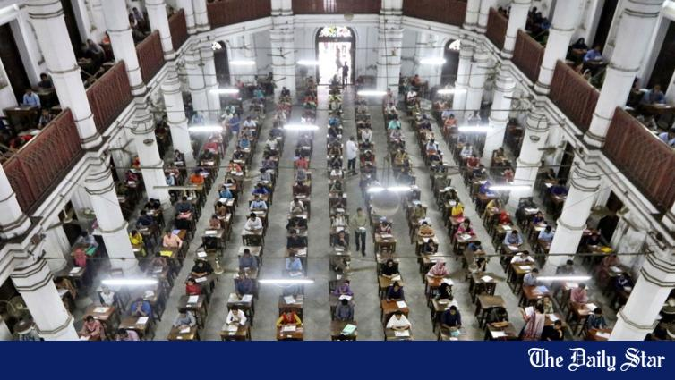
From the next academic year, all public universities have to enrol students through a single admission test and the government will set up a separate authority to hold that exam.
Mohammad Omar Faruque, 27, a graduate of Jahangirnagar University, was hoping to pursue his master’s in the United Kingdom.
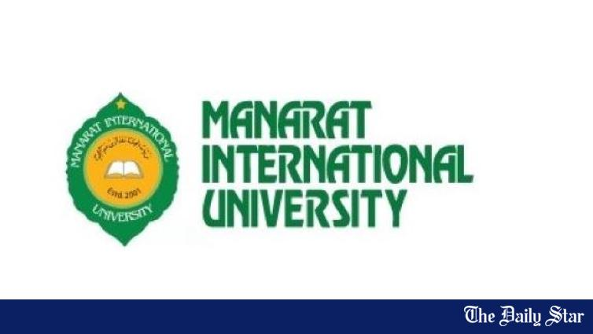
The government yesterday reconstituted Manarat International University’s board of trustees, abolishing the previous one, due to an allegation that some of the immediate-past members were involved in “militancy and anti-state activities”.
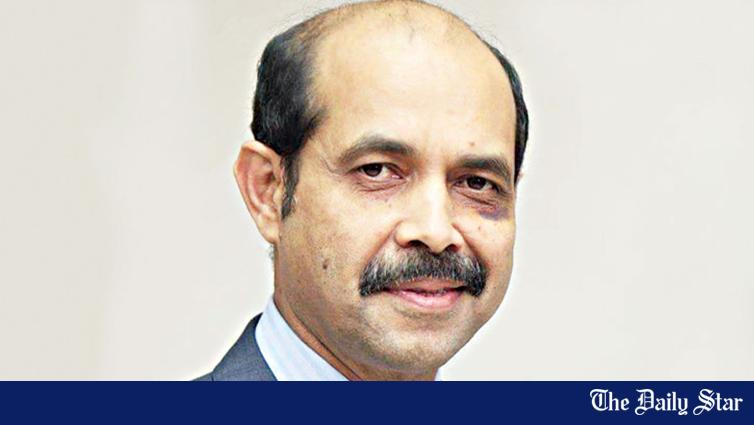
Dhaka North City Corporation Mayor Atiqul Islam has been made the chairman of Manarat International University’s board of trustees.
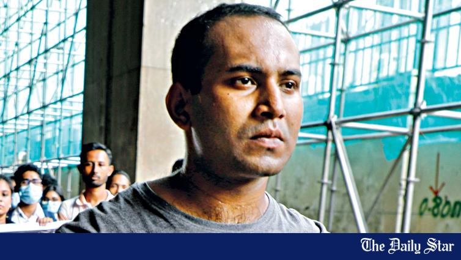
Dhaka University student Mohiuddin Roni last night postponed his protest against mismanagement and corruption in the country’s railway system, for the time being as the authorities concerned assured him of meeting his demands.
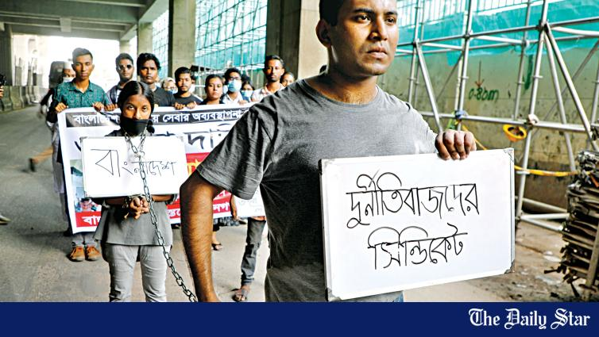
In April this year, Dhaka University student Mohiuddin Roni started a hunger strike for his six-point demand, including the modernisation of the university’s medical centre, after not being satisfied with its facilities.
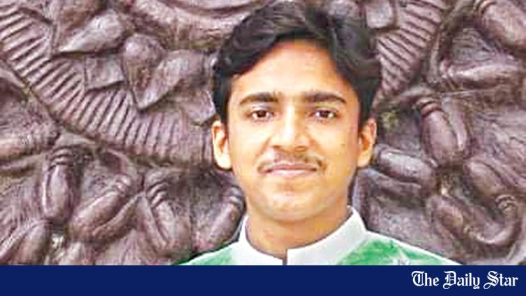
Munira Akter, mother of Rajshahi University student Mahmud Habib Himel, could not shed any tears seeing the coffin of her only son, but her blank eyes made everyone around her choke up.
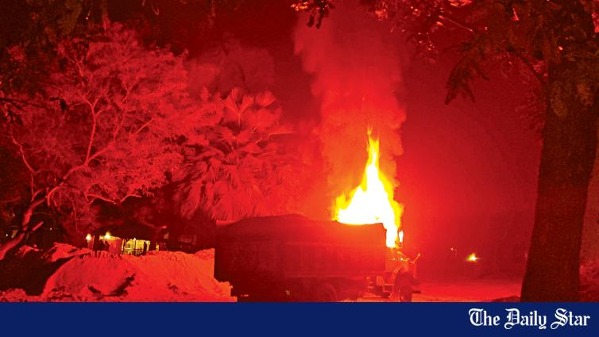
A Rajshahi University student was crushed to death and another injured under the wheels of a construction truck on the campus last night.
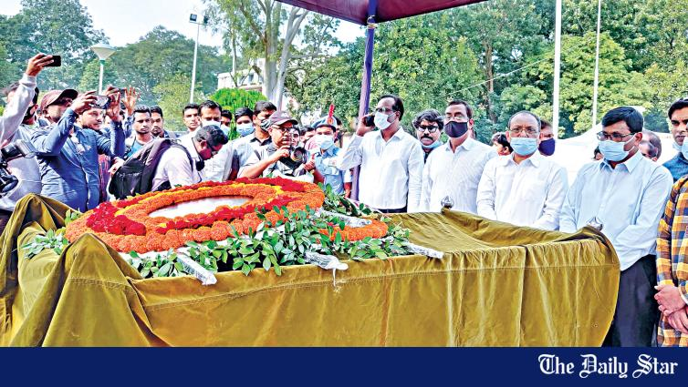
Eminent writer Hasan Azizul Huq was laid to rest on the premises of Rajshahi University Central Library at 3pm yesterday.
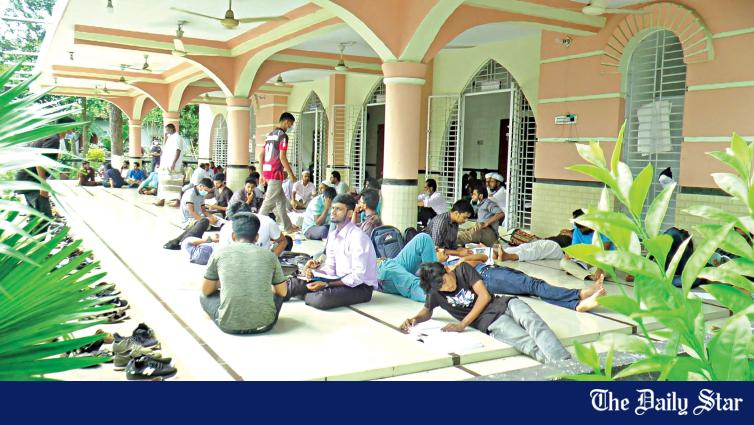
As feared, many admission seekers of Rajshahi University (RU) and their guardians were desperate to find a place to stay yesterday, and the situation was exacerbated by unusually high accommodation rents in the city.
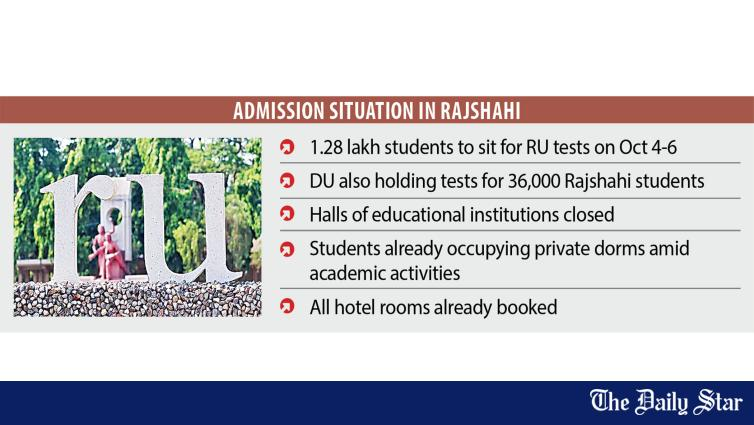
Every year, during Rajshahi University’s (RU) admission tests, the institute’s halls welcome thousands of admission seekers from different corners of the country. According to teachers, student leaders and guardians, the dormitories usually house around 50 percent of admission seekers, particularly students from non-affluent families and those from far flung areas.
Thousands of students of Rajshahi University (RU), who were expecting to sit for their final examinations on university campus, are in uncertainty due to the lockdown imposed in Rajshahi.
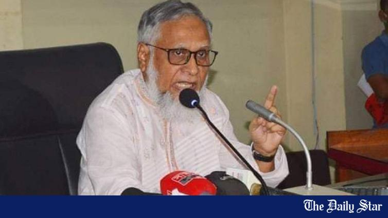
The National Board of Revenue has asked different banks to provide it with detailed financial information of former Rajshahi University vice-chancellor Prof Abdus Sobhan and four others of his family.
In the last 10 years, Rajshahi University’s annual expenditures has risen by Tk 278.67 crore.

Thursday’s chaos on Rajshahi University campus can be attributable to the lack of effective steps after a government report mentioned that bribery, questionable recruitment and financial irregularities were rampant in the administration when Prof Abdus Sobhan was the vice chancellor.
Outgoing Rajshahi University Vice Chancellor Prof M Abdus Sobhan violated a ministerial embargo by appointing 137 teachers and staffers on his last day in office yesterday, giving rise to daylong chaos and clashes on the campus.
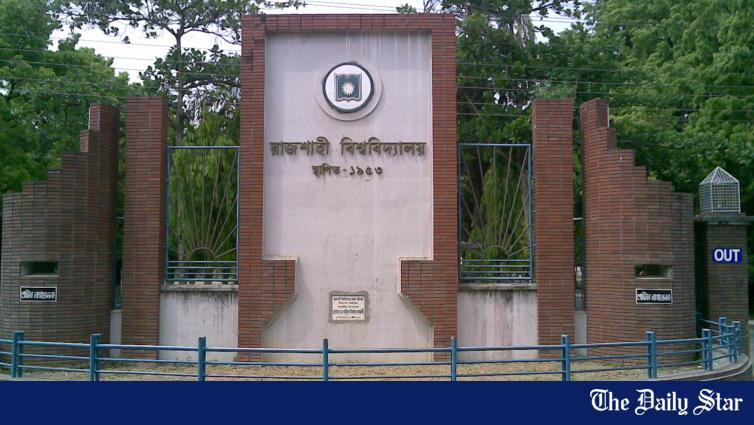
Rajshahi University Vice-Chancellor Prof M Abdus Sobhan has “assured” Chhatra League men that they would get the “highest priorities” in getting jobs at the university.
Students of Rajshahi University (RU) have urged authorities to reopen dormitories, ensuring health guidelines, during the honours and master’s final examinations, which are scheduled to start from January 2.
Teachers of Rajshahi University demanded immediate implementation of recent government orders, including relieving Prof Abdul Bari from the post of the university registrar.
Rajshahi University authorities would want to know from the education ministry the reasons for postponing all kinds of appointments to the university until further notice.
The government has asked Rajshahi University VC Prof M Abdus Sobhan to explain in seven working days why the appointments of his daughter and son-in-law to the university as teachers will not be cancelled.
A Rajshahi University student has been languishing in jail for more than two months after police wrongfully arrested him in a murder case.
On March 3 of 2014, Rajshahi University authorities imposed a ban on all types of processions, rallies and use of megaphones on the campus.
It has been three years since Institute of Business Administration (IBA) of Rajshahi University (RU) was given a separate academic building, but its students are deprived of residential facilities. Students of all other departments can live in university dormitories.
Academic activities of Physical Education and Sports Science (PESS) department at Rajshahi University (RU) are limping along on limited resources although it has been four years since the department opened.
The hope for holding election to Rajshahi University Central Students' Union (Rucsu) by this year is getting stronger as the university authorities are planning to discuss relevant issues with student organisations soon.
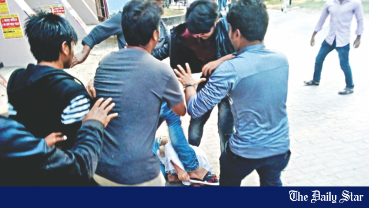
At least six students and a journalist were injured when Chhatra League activists attacked a group of students protesting the screening of commercial film “Dohon” at Rajshahi University yesterday.
The decision of screening Jaaz Multimedia's new film “Dohon” at Rajshahi University has created mixed reactions among students.
Four undergraduate students of Rajshahi University of Engineering and Technology (Ruet) recently launched a crowdfunding platform, kandaribd.com.
Teachers and students of mass communication and journalism department of Rajshahi University yesterday sought a fair investigation into the death of Akter Jahan Joly, an associate professor of the department.
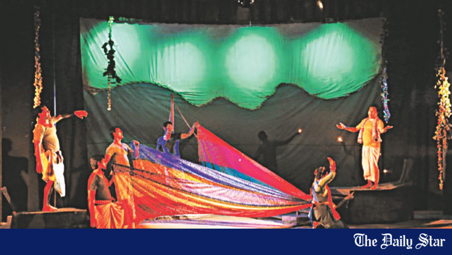
Two plays, “Sampan Naiya” and “Putulnatya”, were staged at Rajshahi University (RU) auditorium last week. Two troupes, Chattogram-based Uttaradhikar and Bangladesh Putul Natya Gobeshona O Unnayan Kendra respectively staged the plays on the third day of the week-long 'Bangladesh-India alliance theatre Festival-2018' at Rajshahi University campus.
When the expectations among the Rajshahi University students are running high in terms of an informative web presence of the educational institution, the authorities have apparently failed to deliver up to the expectations.
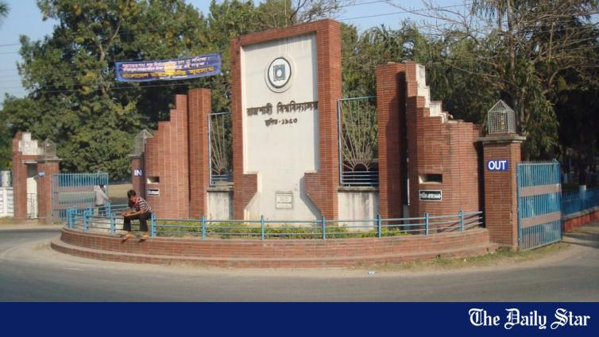
Rajshahi University on Wednesday decided to take punitive action against two teachers of the fine arts faculty for their involvement in making and selecting controversial multiple-choice questions for its admission test.
Even a few years back, Rajshahi University (RU) used to conduct the first-year admission tests in a day or two.
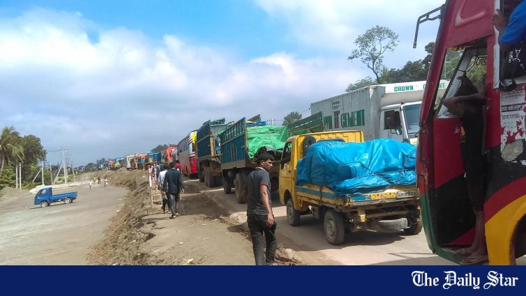
Many students fail to sit for Rajshahi University admission tests as they could not reach in time being stuck in severe traffic congestion on Dhaka-Rajshahi highway.
Most academic and administrative activities at Rajshahi University have ground to a halt as it has been running without a vice-chancellor and a pro vice-chancellor for 21 days.
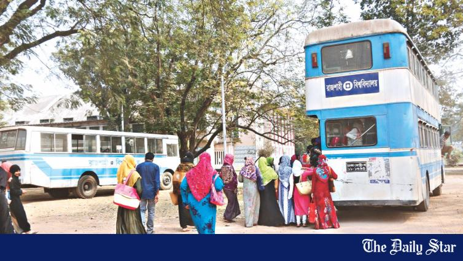
Though the number of students at Rajshahi University has increased over the years, the buses carrying them to and from the campus
Frustration grips the graduates waiting to attend the 10th convocation of Rajshahi University (RU), as the authorities have yet to announce the date of the programme even though two months have elapsed since the registration process ended.
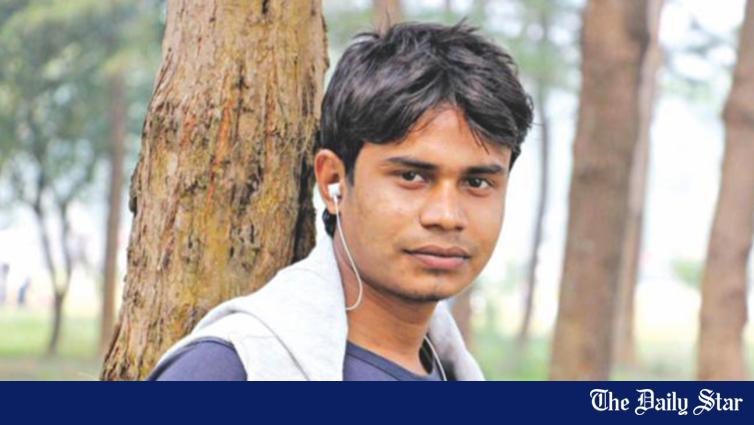
Even after three months into the murder of Rajshahi University student Lipu, no significant progress was made in the investigation into the incident.
The registration fee for the upcoming 10th convocation of Rajshahi University has been fixed at Tk 3,750, at least Tk 1,000